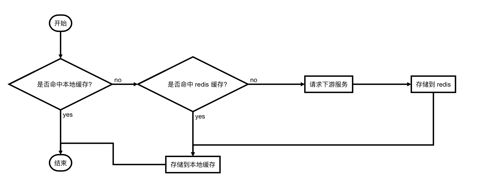
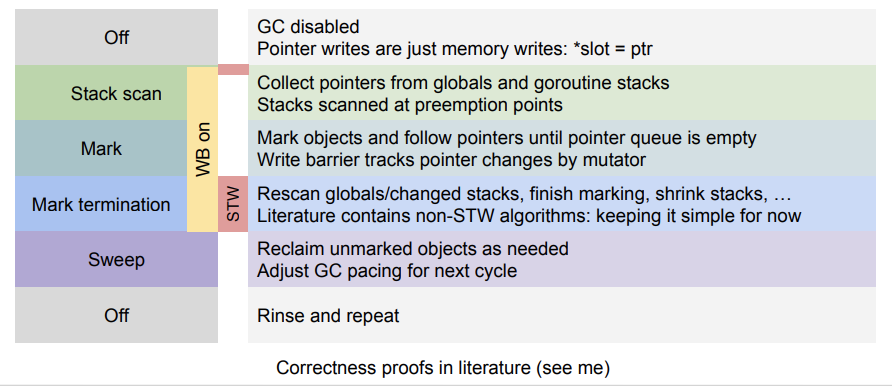

golang 性能优化实践
一、缘起 golang 作为一门 google 主导开发的语言，已经有十年光景了。在这期间，golang 一直朝着 "high performence and easy writing" 的目标在演进，从普及程度上看已经取得了良好的效果。在我们公司技术团队，也在将开发语言从 c++/python 等逐渐切换到 gola…
golang 性能优化实践
一、缘起
golang 作为一门 google 主导开发的语言，已经有十年光景了。在这期间，golang 一直朝着 "high performence and easy writing" 的目标在演进，从普及程度上看已经取得了良好的效果。在我们公司技术团队，也在将开发语言从 c++/python 等逐渐切换到 golang 上来。
然而，业务在实际落地时，并不一定能达到语言设计之初的「高性能」的目标。这其中可能有各方面的原因，比如设计得不够良好的数据结构、测试场景不同、与语言开发习惯相背离的开发模式等。各种可能的因素都会使得业务的 QPS、响应时间等关键指标偏离预期。除了加机器这一简单粗暴的做法，更重要的是我们需要从各个维度上做一些性能优化的工作。
二、业务场景介绍
性能优化有两种思路，其一是针对语言的、业务无关的通用性优化，另一种就是根据具体的业务场景进行针对性优化。因此先介绍下我们的业务场景。
我们的服务运行在一个「客户端-服务端」链路的中间节点上，高峰期单机 QPS 大概 3k+。上游服务会批量携带 liveid 过来，我们去下游接口查到推流地址后，根据用户相关信息计算出一个拉流地址返回给上游。这里面有几点先在此列出：
- 由于是客户端请求链路，上游服务给我们的响应时间是 100ms，超时就断开连接；
- 推/拉流地址 URL 的参数中，key 数量是有限的，大部分 value 的值也是固定的；
- 大部分请求会集中在头部的热门主播上，也就是 liveid 较为集中；
三、优化过程
1. map、slice
golang 的 map、slice 都是做了一层封装，底层分别采用了哈希、数组进行实现。我们经常可能会写出这样的代码：
var liveids []string
for _,liveid := range resp.Liveids{
liveids = append(liveids, liveid)
}
在这种情况下，切片长度将从零开始。每次 append 时，若长度不够，会申请一块两倍长度的新内存，并拷贝数据。当并发量较高时，这种数据拷贝对整体性能的影响便会逐渐凸显。解决方法是预先分配容量：
liveids := make([]string, 0, len(resp.Liveids))
for _,liveid := range resp.Liveids{
liveids = append(liveids, liveid)
}
2. json
我们之前使用的是 golang 标准库的 json 处理方法，通过 pprof 分析后发现序列化和反序列化占用了 10% 左右的处理时间，再加上由此带来的间接 GC 消耗，也是个不小的开销。我们通过如下两个方法，将 json 相关的时间占用减小到了 5% 以下：
- 采用开源第三方库：json-iterator，号称完全兼容标准库，且性能提升 3~4 倍；
- 将代码中对
map做序列化的地方，替换为struct。map更多影响的是 GC 的性能，具体见下文；
3. 锁粒度
部分全局变量需在每个请求中访问，且由另一个协程定时更新，因此需要加锁访问，如下：
func test(){
m.RLock()
defer m.RUnlock()
//read global var
time.Sleep(time.Second*time.Duration(10))
}
func update(){
m.Lock()
defer m.UnLock()
//update global var
}
虽然使用了读写锁，但在更新该变量时，一旦加了写锁，在释放之前读锁都会阻塞，这在高并发的情况下会导致请求迅速堆积。因此我们去掉了 defer，在每次访问数据完毕后立即释放锁资源。幸好我们的业务逻辑不是很复杂，不至于出现死锁的情况。
4. 缓存
前面提到，我们会请求某个下游接口获取 liveid 相关信息，这些信息都是固化的，不会再修改。因此可以使用缓存来减小时间消耗，也可以尽量避免下游接口抖动对上游的影响。
我们实现了两级缓存：本地进程内缓存和 redis 缓存。redis 缓存的目的是多台机器共享，一个 liveid 由一个进程请求一次就可以了。本地缓存则会设定一个过期时间，配合 LFU 算法避免内存无限增长。流程图如下：

5. GC
为便于理解，这里先简要介绍下 golang 的垃圾回收过程：

- stop the world；
- 开启写屏障；
- start the world；
- 扫描根对象；
- 标记阶段；（并发）
- stop the world；
- 重新扫描标记阶段时的产生的新对象；
- 关闭写屏障；
- start the world；
- 清扫阶段；
初始时，程序中不存在任何黑色对象。所有对象都是白色。垃圾回收程序需要拿到所有根节点对象（包括全局指针及每个 goroutine 中的指针），放到灰色对象集合中并开始扫描，因此需要开启 stw，以保证收集根对象期间不会产生新的根对象；
由于扫描、标记阶段跟用户逻辑是并发的，如果在此期间用户将已经被放到黑色集合中的指针指向一个新对象，若无某种保证机制，该对象默认为白色，会在清除阶段被回收掉。因此需要在扫描根对象前开启写屏障，这样新生成的对象会一律标记为灰色。
扫描、标记阶段过程如下：
- 从灰色集合中拿出一个对象，将它指向的所有对象添加到灰色集合中；
- 将刚才拿出的灰色对象标记为黑色，放到黑色集合中；
- 重复以上两步，直到灰色集合为空；
标记完成后，会再次开启 STW，对刚才扫描、标记过程中产生的新对象重新扫描并标记，然后关闭 STW；
此时，所有的黑色对象均为可达状态，不可被回收。剩余的均为白色垃圾对象，对其回收处理。
可以看出，在 GC 过程中，大部分时间里都不停止用户程序。对性能的影响主要体现在两次 STW 时间上。因此我们的主要思路如下：
- 尽可能减少堆上对象的分配数量，尽可能复用堆内存，以减少单次 STW 时间；
- 尽可能减少 GC 次数；
对应的实现方法有：
-
默认情况下，内存增长到原来两倍时会触发 GC。具体到我们服务而言，每次内存增长到 200M 左右会触发一次 GC，在高峰期每几秒钟就被触发。我们在服务启动时添加
GOGC=1000环境变量，现在每 50s 左右才会触发一次。由此带来的代价是服务使用的内存迅速增长，不过尚在可接受范围内； -
重写 URL 解析库，替换标准库。标准库
net/url中会将解析结果存储到一个map[string][]string中。map和slice内部都封装了指针，而 GC 扫描的目标又刚好是指针，导致每次 GC 扫间开销巨大。前面说过，「推/拉流地址 URL 的参数中，key 数量是有限的，大部分 value 的值也是固定的」，所以我们将其实现为map[int]int，具体如下：type Values struct{ iv map[int]int sv map[string]string }-
实现了一个双向映射的集合，即可以根据键查询值，也可以反过来查询；（代码实现较为复杂，有兴趣的同学可以看下源码：https://github.com/SmartBrave/Athena/tree/master/purl，欢迎提 issue！）
func (s *set)getIndex(skey string) (ikey int) //根据字符串查询索引 func (s *set)getString(ikey int) (skey string) //根据索引查询对应字符串
- 为每一个固定的 key、value 生成索引并存储到一个全局的双向映射集合中；
- iv 字段中只存储上述 key、value 对应的索引；
- 对那些不是固定的 key、value，则需要添加白名单，按照原生 map[string]string 存储到 sv 字段中，不过数量会少很多。且提供了 normal/whitelist/blacklist 模式，分别实现全部存储到双向集合、在白名单中的 key 才存储到双向集合、不在白名单中的 key 才存储到双向集合的功能；
- encode 时，将 iv 还原成 map[string]string，并与 sv 合并，然后生成完整 url 返回；
-
-
使用
sync.Pool分配对象。每次进行「分配-回收-分配-回收」无疑对 GC 也是巨大压力，使用内存池可以复用先前已开辟的空间。注意需要将编译器版本升级到 1.13 及以上才会有比较明显的效果，具体原因见release notes； -
对字符串的拼接、修改等操作，会产生新的临时对象。因此可使用
strings.Builder构建字符串；但标准库每次构建strings.Builder还是需要至少申请一次内存，因此结合sync.Pool进行了改写，源码参见：https://github.com/SmartBrave/Athena/tree/master/easypool；
package pool // import "github.com/SmartBrave/utils/pool"
func PutBuffer(giveUpBuf Buffer)
type Buffer []byte
func GetBuffer() (buf Buffer, putFunc func(giveUpStr Buffer))
func GetSlice() (slice []Buffer, putFunc func(giveUpSlice []Buffer))
四、效果对比
| 指标 | 优化前 | 优化后 |
|---|---|---|
| GC 触发间隔 | 5s 左右 | 50s 左右 |
| 服务响应时间 99 分位 | 100ms | 25ms |
可以看出，不管是从底层的 GC 的触发次数，还是业务层的接口响应时间，都有较大幅度的提升。
【完】